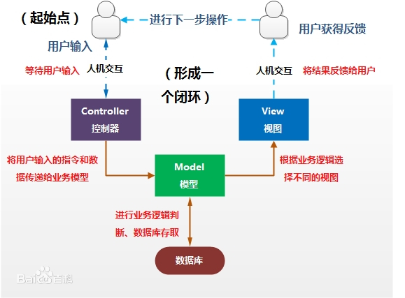

1、MVC与MVCS两种设计模式
MVC，M是指业务模型，V是指用户界面，C则是控制器。
常用于Web开发。
游戏MVC:
视图界面开发属于View ，但界面数据存储在数据库中，Model控制数据。
C控制器，控制逻辑，V与M的组拼。业务逻辑

框架和设计模式的区别
MVC是一种框架模式。
框架、设计模式这两个概念总容易被混淆，其实它们之间还是有区别的。框架通常是代码重用，而设计模式是设计重用，架构则介于两者之间，部分代码重用，部分设计重用，有时分析也可重用。在软件生产中有三种级别的重用：内部重用，即在同一应用中能公共使用的抽象块;代码重用，即将通用模块组合成库或工具集，以便在多个应用和领域都能使用；应用框架的重用，即为专用领域提供通用的或现成的基础结构，以获得最高级别的重用性。
框架与设计模式虽然相似，但却有着根本的不同。设计模式是对在某种环境中反复出现的问题以及解决该问题的方案的描述，它比框架更具象；框架可以用代码表示，也能直接执行或复用，而对模式而言只有实例才能用代码表示;设计模式是比框架更小的元素，一个框架中往往含有一个或多个设计模式，框架总是针对某一特定应用领域，但同一模式却可适用于各种应用。可以说，框架是软件，而设计模式是软件的知识。
框架模式有哪些？
MVC、MTV、MVP、CBD、ORM等等；
框架有哪些？
C++语言的QT、MFC、gtk，Java语言的SSH 、SSI，php语言的 smarty(MVC模式)，python语言的django(MTV模式)等等
设计模式有哪些？
工厂模式、适配器模式、策略模式等等
简而言之：
框架是大智慧，用来对软件设计进行分工；
设计模式是小技巧，对具体问题提出解决方案，以提高代码复用率，降低耦合度。
2、StrangeIoc框架
StrangeIoC is a super-lightweight and highly extensible Inversion-of-Control framework, written specifically for C# and Unity.
StrangeIoC是一个超轻量级和高度可扩展的倒置控制框架，专门为c#和Unity编写。
Details 细节
Dependency Injection 依赖注入
Decouple all your class dependencies and write cleaner, modular code with a highly optimized Reflection/Injection system.
通过高度优化的反射/注入系统，将所有类依赖关系解耦，并编写更简洁的模块化代码。
Two Pub/Sub Systems 两个发布/订阅系统
Each context features an EventDispatcher reachable by any point in code. Additionally, a Signals-and-Slots style Signals dispatcher permits type-safe communication. Apply the method that suits you best!
每个上下文都有一个EventDispatcher，可以通过代码中的任何点访问。此外，信号和插槽样式的信号调度程序允许进行类型安全的通信。应用最适合您的方法！
View mediation 视图中介
Insulate your app from the chaos often present in views. Mediation allows clean separation of Views from Controllers and Models with no loss of capability.
将您的应用程序与视图中经常出现的混乱隔离。中介可将视图与控制器和模型完全分离，而不会损失功能。
Battle-tested architecture 久经沙场的架构
Strange's architecture is based on the popular Robotlegs micro-framework. This architecture is well founded, highly proven, and lightly urges responsible development that works great for individuals or teams.
Strange的体系结构基于流行的Robotlegs微框架。这种体系结构是建立良好，经过验证的，并轻而易举地推动对个人或团队非常有用的负责任的开发。
Core binding framework 核心绑定框架
The core of Strange is a simple, highly extensible Binder class. Extend the Binder to create decoupling models that suit your situation. Every component in Strange is an extension of Binder, so there are already many examples to follow.
Strange的核心是一个简单的，高度可扩展的Binder类。扩展Binder以创建适合您情况的去耦模型。Strange中的每个组件都是Binder的扩展，因此已经有很多示例。
Multiple, modular contexts 多个模块化上下文
Modular contexts allow you to spin off portions of your project to different teams, then agree on an API and plug-and-play. This simplifies development and decouples whole components of the app for later re-use.
模块化的上下文使您可以将项目的一部分分拆给不同的团队，然后就API和即插即用达成一致。这简化了开发，并取消了应用程序的整个组件的耦合以供以后重用。

- Root: contextView 上下文视图
- MVCS Context:
- 绑定所有依赖项（binds dependencies）
- 注入绑定(injectionBinder)
- 控制器绑定(commandBinder)
- 中介绑定(mediationBinder)
- Dispatcher 调度程序（派发器）
- Web：服务器
- Modeles: 模型层。Models store data in simple value object(VO).
- Model (Inject EventDispatcher)
- Controller: 核心层，控制器。Commands Inject Models and Services
- Command(Inject models and services)
- View: 视图层。Views and Mediators Talk.
- Mediator(Inject Dispatcher） 实现UI与游戏逻辑的分离。（UI经常变动，UI尽量不要掺杂游戏逻辑）
- Services：向服务器获取数据。Services communicate with the world outside the app.
- Service(Inject EventDispatcher)